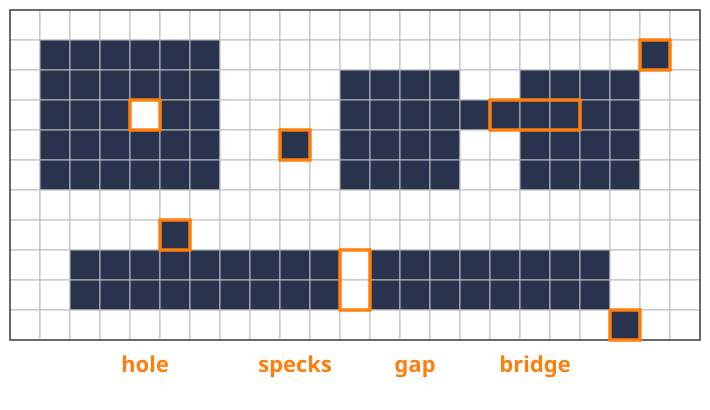
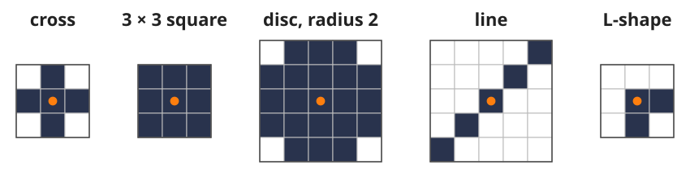
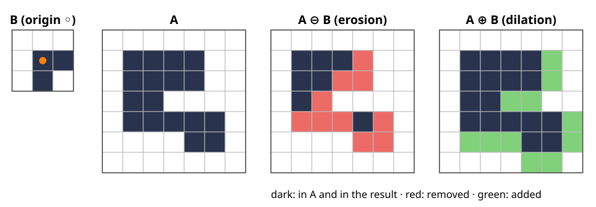
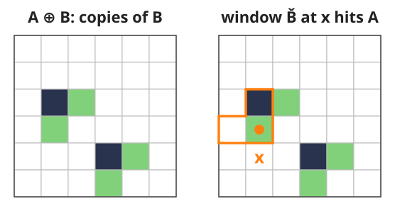
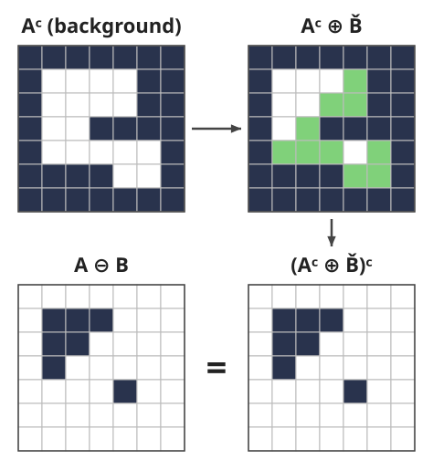
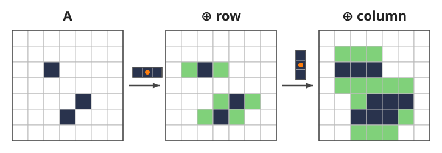
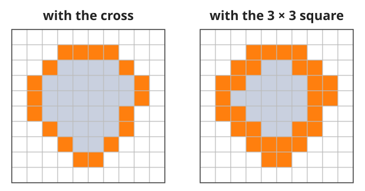
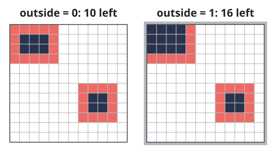

A thresholded image is a mask of 0s and 1s, and it is rarely clean: specks of noise, small holes, objects that touch through a thin bridge. Blurring the mask makes it grey again. Mathematical morphology works on the shapes directly and keeps the image binary.
A binary image is a set of pixels; a structuring element (SE) is a small probe shape.
Erosion: keep the pixels where the SE fits inside the object.
Dilation: keep the pixels where the SE hits the object.
The same sliding window as a convolution, with min and max instead of a weighted sum.
Properties: duality, separable SEs, boundaries, and what happens at the image border.
Slides titled The math give the formulas and proofs; the ideas are complete without them.
Where we start
From the thresholding day: a threshold turns a grey image into a mask, 1 = foreground (object), 0 = background.
Typical defects: isolated specks (noise above the threshold), holes inside objects, gaps that split one object, thin bridges that join two.
A linear filter (a blur, from the kernels unit) would smear the mask into grey values, and we would have to threshold again.

A mask with the four typical defects marked: a one-pixel hole, specks, a one-pixel gap that splits a bar, and a one-pixel-thick bridge between two blocks.
Wanted: operations that take a mask and return a mask, and that act on shape: “remove what is thinner than 3 pixels”, “fill what is narrower than 3 pixels”.
A binary image is a set
Write the mask as the setA of its foreground pixels: A = \{(x, y) : \text{pixel } (x, y) \text{ is } 1\}.
Union A \cup C, intersection A \cap C, complement A^c (the background) are pixel-wise OR, AND, NOT.
TranslateA_z: the set shifted by the vector z.
Reflect\check B: the set mirrored through the origin, every b replaced by -b.
A structuring elementB is a small set with a marked origin: a 5-pixel cross, a 3 \times 3 square, a digital disc, a line, an L-shape. It plays the role of the kernel in a convolution.

Five structuring elements; the orange dot marks the origin.
The math: sets and translates
Pixels are integer vectors x = (x_1, x_2) \in \mathbb{Z}^2 (x_1 right, x_2 down).
A_z = \{a + z : a \in A\}, \qquad \check B = \{-b : b \in B\}, \qquad A^c = \mathbb{Z}^2 \setminus A.
De Morgan: (A \cup C)^c = A^c \cap C^c and (A \cap C)^c = A^c \cup C^c.
Translation commutes with all of these: (A \cap C)_z = A_z \cap C_z, (A^c)_z = (A_z)^c.
An image is a finite window of \mathbb{Z}^2; what lies outside it is a convention (later in this lecture).
Erosion: where does the SE fit?
Place the SE with its origin on pixel x. Keep x if every SE pixel lands on the object:
A \ominus B = \{x : B_x \subseteq A\}.

A 7 \times 7 image A, an L-shaped SE (origin in the corner, orange dot), the erosion and the dilation. Dark: kept, red: removed, green: added.
17 pixels in, 7 out. Everything gets thinner; parts thinner than the SE vanish.
With the origin inside B, erosion only ever removes pixels.
Dilation: where does the reflected SE hit?
Keep x if the reflected SE placed at xhits at least one object pixel:
A \oplus B = \{x : \check B_x \cap A \ne \emptyset\} = \{a + b : a \in A,\ b \in B\}.
The second form: put a copy of B on every object pixel and take the union. A single pixel dilates to a copy of B itself.
In the 7 \times 7 example of the last slide: 17 pixels become 28. Objects grow, holes and gaps narrower than the SE close.
Why the reflection? For an asymmetric SE like the L, “paste B on every pixel” and “look through B at each pixel” differ by a mirror image, exactly as convolution and correlation differ by a flip of the kernel.

Two pixels A (dark) dilated by the L: a copy of B on each pixel (green: added). Right: the mirrored L placed at the pixel x (orange outline) hits A, so x is in A \oplus B.
The math: two ways to write each
A \ominus B = \{x : x + b \in A \ \ \forall b \in B\} = \bigcap_{b \in B} A_{-b}, \qquad A \oplus B = \bigcup_{b \in B} A_b .
Erosion: x \in A_{-b} \iff x + b \in A; “for all b” is an intersection.
Dilation: x \in A_b \iff x - b \in A; “for some b” is a union. The same condition reads \check B_x \cap A \ne \emptyset, since x - b ranges over \check B_x.
A \oplus B is the Minkowski sum of the two sets; it is commutative, A \oplus B = B \oplus A, and associative. Erosion is neither.
Same window as a convolution, min/max instead of a sum
Write the mask as 0/1 values. Then (from the kernels unit: slide a window, combine the values under it)
One row of a mask with a 3-wide window (orange: the window at one pixel, 1\,1\,0 gives min 0 and max 1). Red: removed by the min, green: added by the max.
A flat SE is a window with no weights: erosion is a min filter, dilation a max filter.
Shift-invariant like a convolution: shift the image, the result shifts the same way.
Not linear: \max(f + g) \ne \max f + \max g in general, so no superposition, no frequency response.
The same formulas work on grey images (the grey-level unit of this day).
The math: what min and max do and do not satisfy
Not linear: f = (0, 1), g = (1, 0) on a two-pixel window: \max f + \max g = 2 but \max(f + g) = 1.
But they distribute over the lattice operations: (A \cup C) \oplus B = (A \oplus B) \cup (C \oplus B) and (A \cap C) \ominus B = (A \ominus B) \cap (C \ominus B). In grey values: \max distributes over pointwise \max, like a linear map over sums (“max-plus algebra”: max plays the role of +).
Increasing: A \subseteq A' \Rightarrow A \ominus B \subseteq A' \ominus B and A \oplus B \subseteq A' \oplus B.
If 0 \in B: A \ominus B \subseteq A \subseteq A \oplus B (take b = 0).
Try it: erosion and dilation step by step
Duality: eroding the object = dilating the background
(A \ominus B)^c = A^c \oplus \check B .
In words: a pixel is not in the erosion if the SE placed there hits the background somewhere. That is a dilation of the background.
So a filter on objects is also a filter on the background: erosion shrinks the objects and grows the background, and the reflection \check B is needed when B is asymmetric.
Check with the L: the complement of A^c \oplus \check B is exactly the 7 pixels of A \ominus B (right; the exercise does it by hand).

The 7 \times 7 example with the L. Dilate the background by \check B (green: added), take the complement: the same 7 pixels as A \ominus B.
The math: duality and adjunction
Duality: x \notin A \ominus B \iff \exists b \in B : x + b \in A^c \iff \exists b' \in \check B : x - b' \in A^c \iff x \in A^c \oplus \check B.
Adjunction (the pair is “adjoint”, like a linear map and its transpose):
A \oplus B \subseteq C \iff A \subseteq C \ominus B .
Proof: both say “a + b \in C for all a \in A, b \in B”. Consequences: (A \oplus B) \ominus B \supseteq A and (C \ominus B) \oplus B \subseteq C, the closing and opening of the next unit.
Two lines make a square
Dilation is associative: A \oplus (B_1 \oplus B_2) = (A \oplus B_1) \oplus B_2.

Three pixels dilated by a row of 3, then by a column of 3 (green: added at each step): 3 → 9 → 22 pixels, the same set as the dilation by the 3 \times 3 square.
A 3 \times 3 square is a row of 3 dilated by a column of 3, so dilating by the square = dilating by the row, then by the column. A 15 \times 15 square: 30 comparisons per pixel instead of 225. The separable-kernel trick of the kernels unit, again.
A disc is approximated by lines in a few directions (an octagon from 4 lines).
A line of any length costs about 3 comparisons per pixel with the van Herk / Gil–Werman algorithm (running min/max over blocks): the cost no longer depends on the SE size.
Erosion decomposes the same way: A \ominus (B_1 \oplus B_2) = (A \ominus B_1) \ominus B_2.
Boundaries
The inner boundary of an object: the pixels that erosion removes,
\partial A = A \setminus (A \ominus B).
With the cross, a pixel is interior if its 4 neighbours are in A; the boundary is a thin contour that is 8-connected (it may step diagonally).
With the square, a pixel is interior only if all 8 neighbours are in A; the boundary is thicker and 4-connected.
Course convention (the labelling and watershed days use it too): objects 8-connected, background 4-connected.

The inner boundary (orange) of the same object: 18 pixels with the cross, 28 with the square.
At the image border
Erosion near the edge asks about pixels outside the image. A convention decides:
outside = 0: the image is surrounded by background; erosion eats into every object that touches the edge.
outside = 1 (or “ignored”): the outside never removes anything; an object cut by the edge is not eroded from that side.
Example (the demo’s “border convention”): 36 pixels, eroded by the 3 \times 3 square: 10 with outside = 0, 16 with outside = 1.

The demo’s example eroded by the 3 \times 3 square; red: removed. The shaded frame on the right stands for an outside of 1s.
Neither is right in general: an object cut by the image edge continues outside, or it does not. The same question as zero vs replicate padding for convolutions.
Try it: duality and the border
Summary
A binary image is a set; a structuring element is a small probe set with an origin.
ErosionA \ominus B: where B fits (a min filter). DilationA \oplus B: where \check B hits, the union of copies of B (a max filter).
Nonlinear but shift-invariant; increasing; with the origin in B, erosion shrinks and dilation grows.
Duality: eroding the objects = dilating the background with the reflected SE.
Large SEs decompose into lines; the border convention matters.
Everything carries over to 3D with a ball as SE (the 3D elective: a closing of a segmented stack before surface extraction removes tiny cavities).
Next unit: opening and closing, which undo the shrinking and growing, and the distance transform.